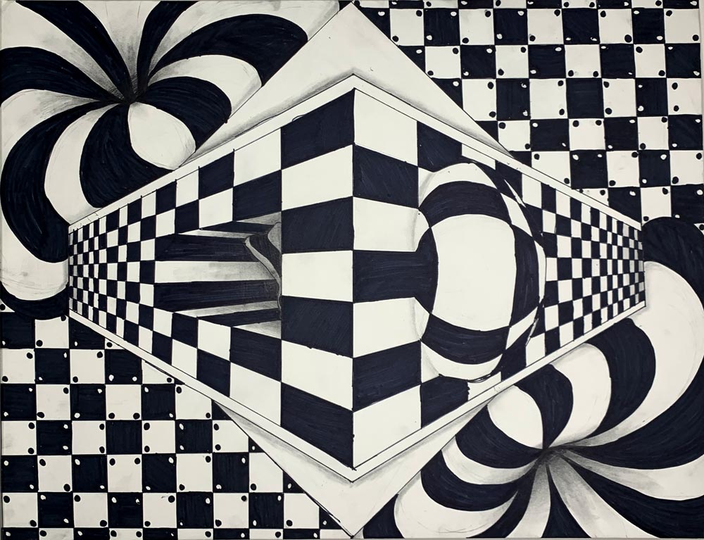
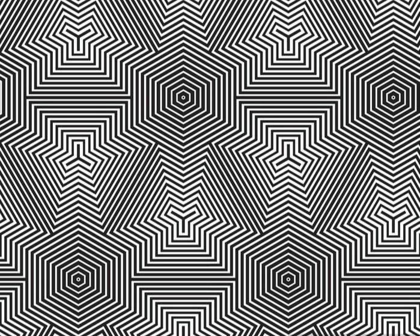

Historical Context

Op Art began gaining prominence in the mid-20th century, amidst the rise of abstract art movements. The movement is often associated with artists like Victor Vasarely, Bridget Riley, and Julian Stanczak, who explored the interaction between color and form. The first major exhibition dedicated to Op Art, "The Responsive Eye," took place at the Museum of Modern Art (MoMA) in New York City in 1965, cementing the movement's significance within the art community.
Characteristics of Op Art
Op Art is known for its distinctive features: